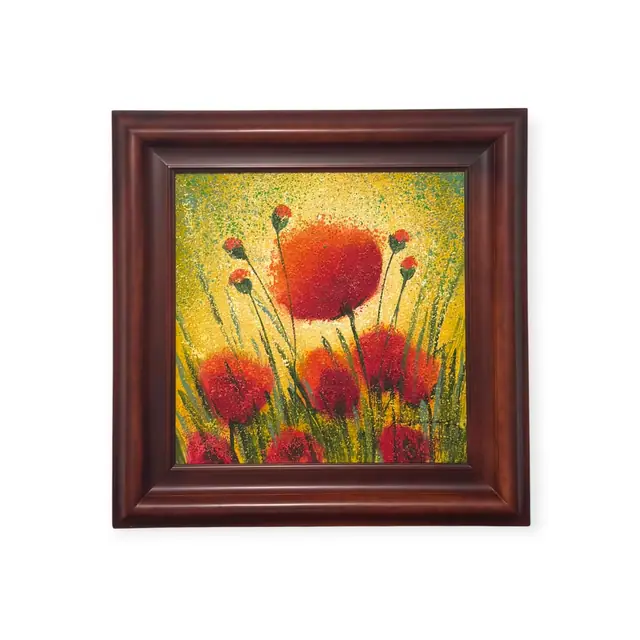
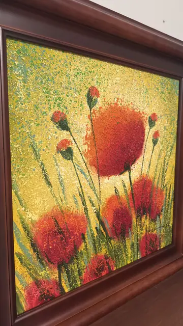
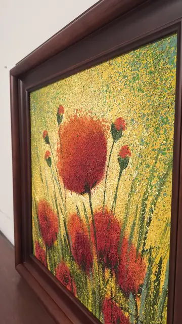

Paintings & Prints
Red Poppies on a Golden Field, Signed, Framed
· late 20th to early 21st century
Price Upon Request



About the Item
Eight or nine scarlet poppy heads on slender green stems fill a nearly square canvas, the largest opening at the upper centre like a small sun. Everything is built from thick granular dabs of paint - the flowers are dense mounds of vermilion and crimson, the ground behind is a stippled blaze of chrome yellow, gold and emerald flecks that reads as sunlight through grass. The impasto stands proud enough to cast its own shadows, giving the surface a crusted, almost mosaic texture. Medium: oil on canvas, heavy impasto. Signed lower right of the canvas, scratched into the impasto in dark paint. Condition: No visible damage; the impasto is intact with no flaking seen. Strong flash reflection off the raised paint in the detail shots.
Details
- Creation Year:
- late 20th to early 21st century
- Dimensions:
- Height: 33.3 in (84.58 cm)
Width: 33.0 in (83.82 cm)
outside of frame - Medium:
- oil on canvas, heavy impasto
- Period:
- 21St
- Condition:
- Offered in the condition shown in the photographs.
- Reference Number:
- VO-117
- Documentation:
- no certificate photographed